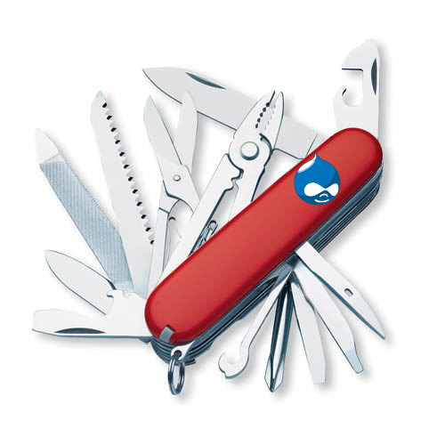

Drush and Drupal console
bit.ly/drush_console
Slides are hosted on github, press 's' if you want to read speaker notes too.
About myself
Valery "valthebald" Lourie
Core mentoring coordinator https://www.drupal.org/core-mentoringGlobal Sprint weekend 29.01
Agenda
- What is drush
- What is Drupal console
- Similarities and Differences
- Extending
What is drush
Drush launching chain
- Finder
- Wrapper (optional)
- Launcher
Aliases
Check your ~/.drush folder for *.aliases.drushrc.php
project.aliases.drushrc.php:
$aliases['dev'] = array(
'uri' => 'http://dev.project.com',
'root' => '/var/www/project/docroot',
'remote-host' => 'dev.hosting.com',
'remote-user' => 'my-user',
'ssh-options' => '-o PasswordAuthentication=no -i ~/.vagrant.d/insecure_private_key',
);
$aliases['prod'] = array(
'uri' => 'https://www.project.com',
'root' => '/var/www/project/docroot',
'remote-host' => 'prod1.hosting.com',
'remote-user' => 'my-user',
'ssh-options' => '-o PasswordAuthentication=no -i ~/.vagrant.d/insecure_private_key',
);
Aliases
drush @project.dev ssh
drush @project.prod updatedb
Drush commands
/**
* Implementation of hook_drush_command().
*
* In this hook, you specify which commands your
* drush module makes available, what it does and
* description.
*
* Notice how this structure closely resembles how
* you define menu hooks.
*
* @return
* An associative array describing your command(s).
*/
function variable_drush_command() {
$items['variable-get'] = array(
'description' => 'Get a list of some or all site variables and values.',
'core' => array(6,7),
'arguments' => array(
'name' => 'A string to filter the variables by. Variables whose name contains the string will be listed.',
),
'examples' => array(
'drush vget' => 'List all variables and values.',
'drush vget user' => 'List all variables containing the string "user".',
'drush vget site_mail --exact' => 'Show only the value of the variable with the exact key "site_mail".',
'drush vget site_mail --exact --pipe' => 'Show only the variable with the exact key "site_mail" without changing the structure of the output.',
),
'options' => array(
'exact' => "Only get the one variable that exactly matches the specified name. Output will contain only the variable's value.",
),
'outputformat' => array(
'default' => 'yaml',
'pipe-format' => 'config',
'variable-name' => 'variables',
'table-metadata' => array(
'format' => 'var_export',
),
),
'aliases' => array('vget'),
);
Drush commands
/**
* Command callback.
* List your site's variables.
*/
function drush_variable_get() {
global $conf;
$exact = drush_get_option('exact', FALSE);
$keys = array_keys($conf);
if ($args = func_get_args()) {
$args[0] = drush_variable_name_adjust($args[0]);
if ($exact) {
$keys = in_array($args[0], $keys) ? array($args[0]) : array();
}
$keys = preg_grep("/{$args[0]}/", $keys);
}
...
Add your own code
mymodule.drush.inc
/**
* Implements of hook_drush_command().
*/
function mymodule_drush_command() {
$items['make-happy'] = array(
'description' => 'Make everyone or selected audience happy.',
'arguments' => array(
'who' => 'Optional filter who should be happy.',
),
'examples' => array(
'drush mh' => 'Make everyone happy.',
'drush make-happy Russians' => 'Make only Russians happy.',
),
'aliases' => array('mh'),
);
Where can I place it?
- Any drupal module (previous screen)
- sites/all/drush
- ~/.drush
What's common?
| Task | Drush | Console |
|---|---|---|
| Install site | drush site-install | drupal site:install |
| Run database updates | drush updatedb | drupal update-execute |
What is console

Why?
References
- http://www.drush.org/en/master/
- https://drupalconsole.com/
- http://symfony.com/doc/current/components/console.html
Agenda
- What is drush
- What is Drupal console
- Similarities and Differences
- Extending